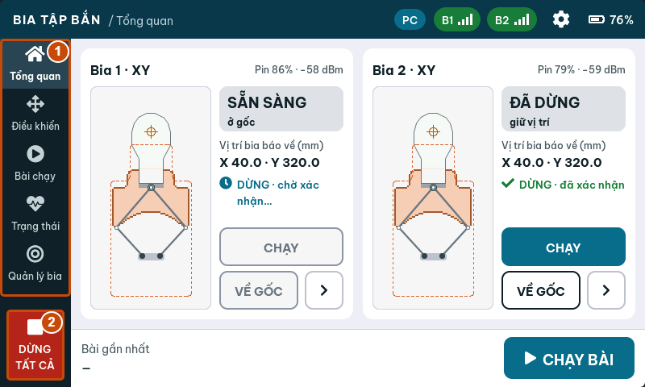
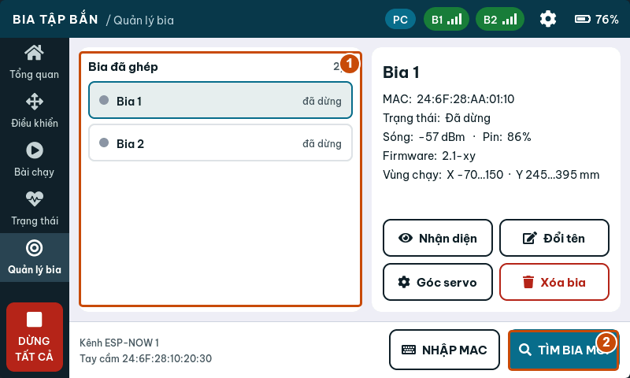
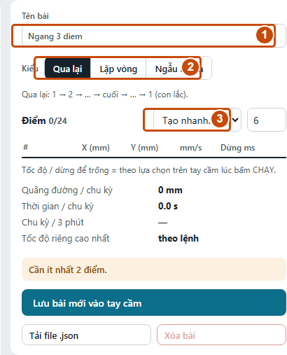
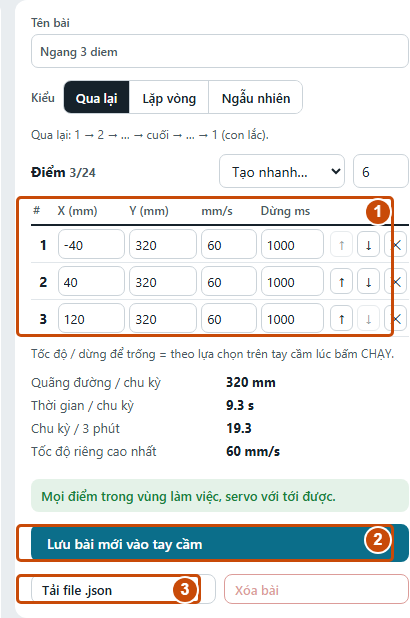
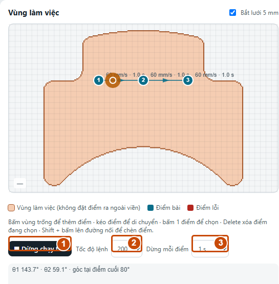
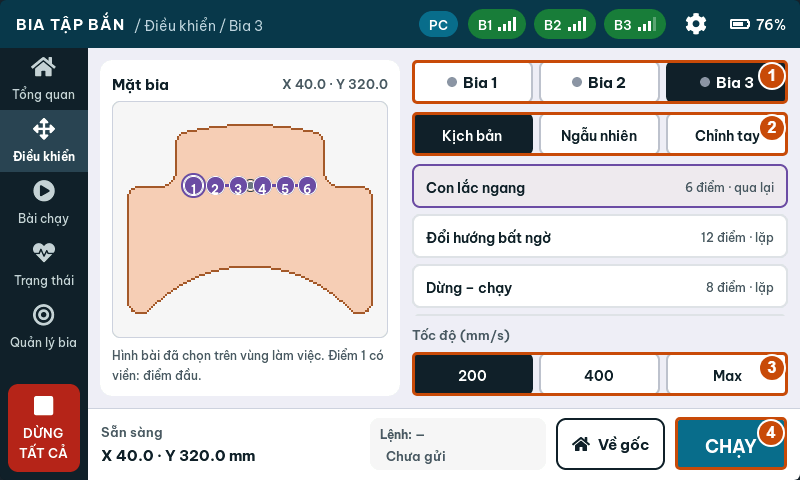
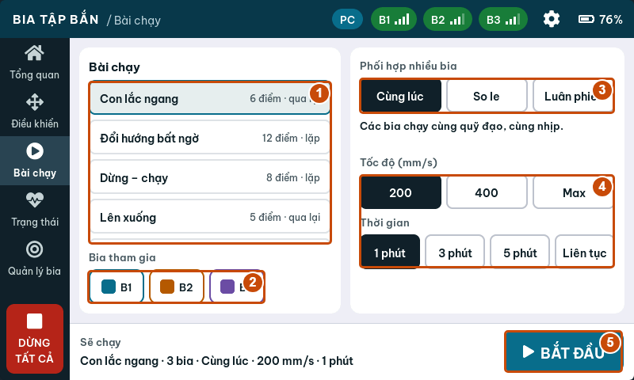
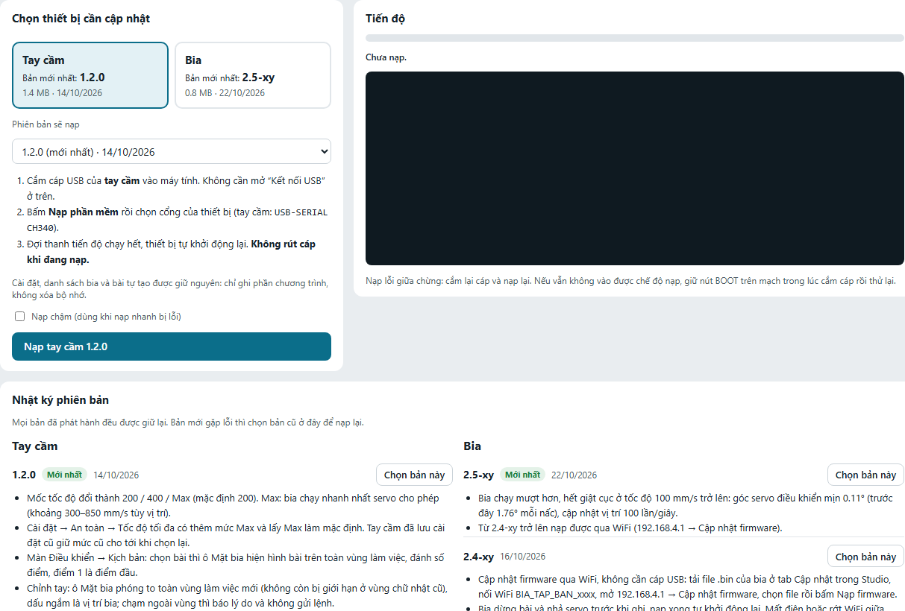

1. Bắt đầu với Dùng thử
Bấm Dùng thử (không cần tay cầm) để làm quen trên tay cầm ảo. Trong tab Tay cầm, bấm chuột như chạm màn hình; thử các trang Điều khiển, Bài chạy và Quản lý bia.
Dữ liệu của tay cầm ảo mất khi tải lại trang. Muốn giữ bài, tải JSON hoặc bấm lưu vào Bài của tôi khi đã đăng nhập. Xem chạy thử trong bộ thiết kế chỉ chạy mô phỏng.

2. Kết nối máy tính, tay cầm và bia
- Dùng Chrome hoặc Edge trên máy tính. Dừng bia trước khi nối USB vì một số driver có thể làm tay cầm khởi động lại lúc mở cổng.
- Cắm cáp USB-C truyền dữ liệu vào tay cầm, bấm Kết nối USB, chọn cổng tay cầm (thường là USB-SERIAL CH340).
- Chờ bản sao màn hình hiện ra và chỉ báo kết nối cập nhật. Chip PC xuất hiện trên tay cầm thật.
USB nối web với tay cầm; ESP-NOW nối tay cầm với bia, không cần Internet. Mạng BIA_TAP_BAN_xxxx do từng bia phát dành cho trang cấu hình cục bộ, dùng mật khẩu riêng và IP được bàn giao. Mạng này khác với cloud.
Ngắt USB hoặc đóng trang không dừng bia. Bấm DỪNG BÀI hoặc DỪNG TẤT CẢ rồi quan sát bia dừng trước khi kết thúc.
3. Ghép bia với tay cầm
- Bật nguồn bia, đặt bia và tay cầm cùng kênh ESP-NOW.
- Trong màn hình tay cầm, mở Quản lý bia → TÌM BIA MỚI.
- Bấm Nhận diện để xác định bia, rồi GHÉP → XONG. Nhận diện có thể làm bia chuyển động.
- Đổi tên dễ nhận biết và kiểm tra bia trực tuyến, không báo lỗi. Có thể dùng NHẬP MAC nếu biết địa chỉ của đúng bia.
Một tay cầm quản lý tối đa 8 bia. Danh sách ghép và cài đặt giữ sau khi tắt nguồn.

4. Tạo bài tập đầu tiên
- Mở Thiết kế bài tập → + Bài mới, đặt tên ngắn.
- Chọn Qua lại để đi rồi trở ngược, hoặc Lặp vòng để nối điểm cuối về điểm đầu.
- Bấm trong vùng tô màu để thêm điểm, kéo để sửa; nhập chính xác X, Y trong bảng. Shift + bấm đường nối để chèn; ↑ / ↓ đổi thứ tự; ✕ xóa điểm.
- Nhập tốc độ và dừng từng điểm, hoặc để trống để theo lệnh chạy. Dừng 0 là không dừng; dừng trống là theo lệnh.
- Bấm ▶ Xem chạy thử, kiểm tra đường nối và các thông báo lỗi, rồi bấm nút Lưu phù hợp.
Ví dụ Ngang 3 diem: Qua lại; ba điểm (−40, 320), (40, 320), (120, 320) mm; mỗi điểm 60 mm/s, dừng 1000 ms. Dùng Nhập file… để mở JSON mẫu tải ở đầu trang, rồi bấm Lưu.
Mỗi bài tối đa 24 điểm; tay cầm có 6 bài có sẵn + 26 bài tự tạo. Bài có sẵn cần Nhân bản để sửa. Tốc độ riêng 5–400 mm/s vẫn chịu trần tốc độ của tay cầm; dừng tối đa 60000 ms.
Bài mới khi đã đăng nhập được lưu vào Bài của tôi. Muốn có trên thiết bị, bấm Gửi xuống tay cầm (USB). Khi chưa đăng nhập và đã nối USB, bài mới lưu trực tiếp vào tay cầm. Chờ thông báo thành công; trang không tự lưu mọi thay đổi.



5. Chạy bài trên bia thật
Trong Điều khiển, chọn bia → Kịch bản → bài → tốc độ → CHẠY. Trong Chỉnh tay, chạm hình để đưa tâm đầu người tới điểm chọn; chạm ngoài vùng thì bia dừng tại biên hợp lệ gần nhất. Dùng nút mũi tên để dịch bước nhỏ hoặc Ngẫu nhiên để bia tự chọn điểm.
Trong Bài chạy, chọn bài → Bia tham gia → Cùng lúc / So le / Luân phiên → tốc độ → thời gian → BẮT ĐẦU. Muốn Bia 1 và Bia 2 chạy hai bài khác nhau: khởi chạy bài đầu chỉ với Bia 1, bấm + Thêm bài, chọn bài khác và Bia 2. Chuyển tab B1 / B2 để xem đồng hồ, TẠM DỪNG / TIẾP TỤC hoặc DỪNG BÀI riêng từng phiên. DỪNG TẤT CẢ dừng toàn bộ.
Bài đã nạp có thể chạy trực tiếp từ tay cầm khi không nối máy tính. Hệ thống hiện không có cảm biến ghi nhận phát trúng và không tự chấm điểm.


6. Bài của tôi, đồng bộ và sao lưu
Trên bản web trực tuyến, Đăng nhập Google để lưu Bài của tôi và mở lại trên máy khác. Dùng Chép vào Bài của tôi hoặc Gửi xuống tay cầm (USB) để chuyển bản bài giữa tài khoản và thiết bị.
Trên tay cầm mở Cài đặt → Đồng bộ: ĐẶT WIFI, chọn WiFi 2.4 GHz có Internet trong danh sách quét được và nhập mật khẩu, rồi GHÉP TÀI KHOẢN để hiện mã 6 số. Trên web mở Đồng bộ, nhập mã, bấm Ghép đôi, tick tối đa 26 bài và bấm Lưu danh sách. Cuối cùng bấm ĐỒNG BỘ NGAY trên tay cầm: các bài tự tạo trên tay cầm được thay bằng danh sách này, nên sao lưu trước. Chỉ ghép / đồng bộ khi bia đứng yên vì lúc dùng WiFi tay cầm tạm mất liên lạc với bia.
Tải file .json xuất một bài. Xuất file ưu tiên thư viện cloud nếu đã đăng nhập và có bài; nếu cần sao lưu tay cầm, xuất từng bài hoặc đăng xuất trước. Nhập một bài chỉ mở vào bộ sửa, cần bấm Lưu để giữ.
7. Cập nhật firmware tay cầm và bia
- Mở website Studio bằng Chrome hoặc Edge trên máy tính, giữ Internet để tải firmware. Sao lưu bài ra JSON, ghi lại cài đặt và DỪNG TẤT CẢ; quan sát bia dừng.
- Mở tab Cập nhật, chọn đúng Tay cầm hoặc Bia, kiểm tra bản mới nhất. Cắm cáp USB truyền dữ liệu trực tiếp vào thiết bị đó; cập nhật từng thiết bị riêng.
- Bấm Nạp phần mềm, chọn đúng cổng (tay cầm thường là USB-SERIAL CH340). Không cần bấm Kết nối USB trước. Nếu được hỏi, chọn Ngắt và tiếp tục để nhường cổng đang dùng.
- Chờ trạng thái Xong và thiết bị khởi động lại. Không rút cáp, tắt nguồn hoặc đóng trang khi đang nạp.
- Kết nối lại, kiểm tra phiên bản, bài tập, danh sách bia và cài đặt; kiểm tra hiệu chuẩn bia rồi thử một bài chậm.
Nhật ký phiên bản ở cuối tab ghi thay đổi của từng bản. Mọi bản cũ đều được giữ: bản mới gặp lỗi thì bấm Chọn bản này ở bản cũ rồi nạp lại (sao lưu bài ra JSON trước).
Chưa có gói firmware trên web thì chưa nạp được. Nạp lỗi: đóng chương trình đang giữ cổng, cắm lại cáp và thử Nạp chậm. Nếu không vào chế độ nạp, làm theo chỉ dẫn BOOT và tài liệu của board. Không xác nhận nạp khi thiết bị thực tế khác loại đang chọn.
Xem mục 10.5 trong sổ tay để đọc đầy đủ quy trình và lưu ý sao lưu.

8. Khi gặp lỗi
- Không thấy cổng USB
- Kiểm tra cáp dữ liệu, trình duyệt và driver CH340; đóng Serial Monitor hoặc tab khác đang giữ cổng.
- Không thấy bia / mất sóng
- Kiểm tra nguồn, cùng kênh ESP-NOW và tình trạng ghép. Dừng và nhận lại trạng thái trước khi chạy tiếp.
- Không lưu được bài
- Kiểm tra nơi lưu, đăng nhập/kết nối, tên ngắn, điểm hợp lệ và số chỗ bài còn trống.
- Không có mã cloud trên tay cầm
- Cập nhật firmware tay cầm 1.1.0 trở lên; cài WiFi ở Cài đặt → Đồng bộ trước khi bấm Ghép tài khoản.
Sổ tay đầy đủ có hướng dẫn WiFi hiệu chuẩn, ba bài mẫu, bảng lỗi và phiếu bàn giao. Mở sổ tay để tra cứu hoặc in A4.
Tab Cập nhật dùng để nạp phần mềm cho đúng tay cầm hoặc bia qua USB khi đã có bản phát hành. Nếu chưa có gói trên web, chưa nạp được. Sao lưu bài, dừng bia và chọn đúng thiết bị trước khi nạp; xem mục 10.5 trong sổ tay.
Tài liệu 1.2 · 14/10/2026 · Trần Nguyên Bình